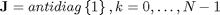

Calculation of DST_IV using DST_III (alternative)
Contents
Definitions
Result of transform is y=x*T, where y, x are row-vectors T is transform matrix
DST_IV matrix definition

N=8; DST4=sin(pi/N*[(0:N-1)+1/2]'*[(0:N-1)+1/2])
DST4 =
0.0980 0.2903 0.4714 0.6344 0.7730 0.8819 0.9569 0.9952
0.2903 0.7730 0.9952 0.8819 0.4714 -0.0980 -0.6344 -0.9569
0.4714 0.9952 0.6344 -0.2903 -0.9569 -0.7730 0.0980 0.8819
0.6344 0.8819 -0.2903 -0.9952 -0.0980 0.9569 0.4714 -0.7730
0.7730 0.4714 -0.9569 -0.0980 0.9952 -0.2903 -0.8819 0.6344
0.8819 -0.0980 -0.7730 0.9569 -0.2903 -0.6344 0.9952 -0.4714
0.9569 -0.6344 0.0980 0.4714 -0.8819 0.9952 -0.7730 0.2903
0.9952 -0.9569 0.8819 -0.7730 0.6344 -0.4714 0.2903 -0.0980
DST_III matrix definition
DST3=sin(pi/N*[(0:N-1)+1/2]'*[(0:N-1)+1])
DST3 =
0.1951 0.3827 0.5556 0.7071 0.8315 0.9239 0.9808 1.0000
0.5556 0.9239 0.9808 0.7071 0.1951 -0.3827 -0.8315 -1.0000
0.8315 0.9239 0.1951 -0.7071 -0.9808 -0.3827 0.5556 1.0000
0.9808 0.3827 -0.8315 -0.7071 0.5556 0.9239 -0.1951 -1.0000
0.9808 -0.3827 -0.8315 0.7071 0.5556 -0.9239 -0.1951 1.0000
0.8315 -0.9239 0.1951 0.7071 -0.9808 0.3827 0.5556 -1.0000
0.5556 -0.9239 0.9808 -0.7071 0.1951 0.3827 -0.8315 1.0000
0.1951 -0.3827 0.5556 -0.7071 0.8315 -0.9239 0.9808 -1.0000
Finding relations
We will base our derivation on already existing relations between DCT_IV and DCT_III transforms
where
Applying relations between dual transforms
where

we will get
B=diag(ones(1,N))+diag(ones(1,N-1),1);
B(1,1)=2; B=B/2;
D=diag(cos(pi/2/N*([0:N-1]+1/2)));
% K=diag((-1).^(0:N-1));
J=rot90(eye(N));
Check expression of DST_III through DST_IV
Check DSTIII matrix
inv(D)*DST4*J*B*J
ans =
0.1951 0.3827 0.5556 0.7071 0.8315 0.9239 0.9808 1.0000
0.5556 0.9239 0.9808 0.7071 0.1951 -0.3827 -0.8315 -1.0000
0.8315 0.9239 0.1951 -0.7071 -0.9808 -0.3827 0.5556 1.0000
0.9808 0.3827 -0.8315 -0.7071 0.5556 0.9239 -0.1951 -1.0000
0.9808 -0.3827 -0.8315 0.7071 0.5556 -0.9239 -0.1951 1.0000
0.8315 -0.9239 0.1951 0.7071 -0.9808 0.3827 0.5556 -1.0000
0.5556 -0.9239 0.9808 -0.7071 0.1951 0.3827 -0.8315 1.0000
0.1951 -0.3827 0.5556 -0.7071 0.8315 -0.9239 0.9808 -1.0000
Check computation of DSTIII transform
x=randn(1,N) y=x*DST3 % true result y1=x*inv(D)*DST4*J*B*J % compute DSTIII using DSTIV transform
x =
1.0668 0.0593 -0.0956 -0.8323 0.2944 -1.3362 0.7143 1.6236
y =
-0.7635 -0.1033 2.4214 -0.9373 3.4933 -1.7795 1.3049 2.4655
y1 =
-0.7635 -0.1033 2.4214 -0.9373 3.4933 -1.7795 1.3049 2.4655
Check expression of DST_IV through DST_III
D*DST3*J*inv(B)*J
ans =
0.0980 0.2903 0.4714 0.6344 0.7730 0.8819 0.9569 0.9952
0.2903 0.7730 0.9952 0.8819 0.4714 -0.0980 -0.6344 -0.9569
0.4714 0.9952 0.6344 -0.2903 -0.9569 -0.7730 0.0980 0.8819
0.6344 0.8819 -0.2903 -0.9952 -0.0980 0.9569 0.4714 -0.7730
0.7730 0.4714 -0.9569 -0.0980 0.9952 -0.2903 -0.8819 0.6344
0.8819 -0.0980 -0.7730 0.9569 -0.2903 -0.6344 0.9952 -0.4714
0.9569 -0.6344 0.0980 0.4714 -0.8819 0.9952 -0.7730 0.2903
0.9952 -0.9569 0.8819 -0.7730 0.6344 -0.4714 0.2903 -0.0980
Check computation of DSTIV transform
y=x*DST4 % true result y1=x*D*DST3*J*inv(B)*J % compute DSTIV using DSTIII transform
y =
0.8971 -2.2108 2.9958 -0.6407 2.1065 0.9202 -1.0888 2.4288
y1 =
0.8971 -2.2108 2.9958 -0.6407 2.1065 0.9202 -1.0888 2.4288
Reference
[1] Markus Pueschel, Jose M.F. Moura. The Algebraic Approach to the Discrete Cosine and Sine Transforms and their Fast Algorithms SIAM Journal of Computing 2003, Vol. 32, No. 5, pp. 1280-1316.